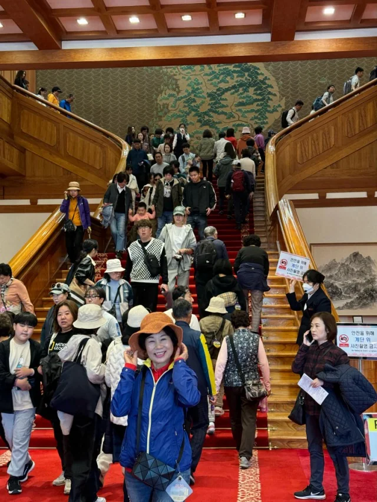
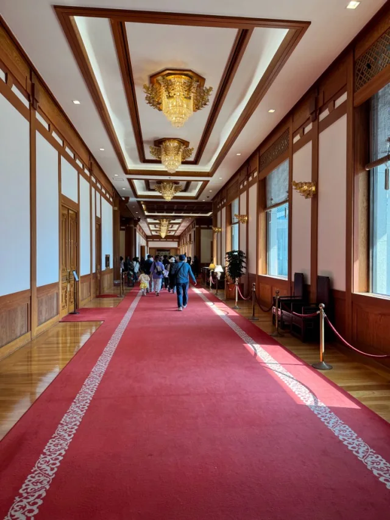
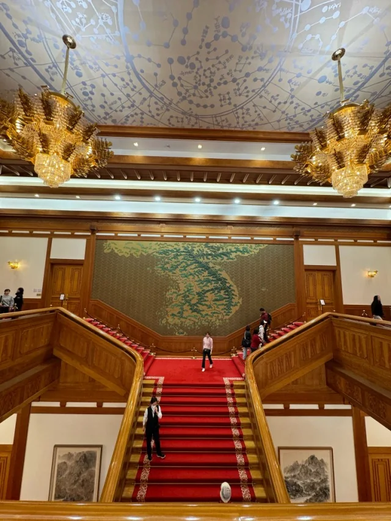
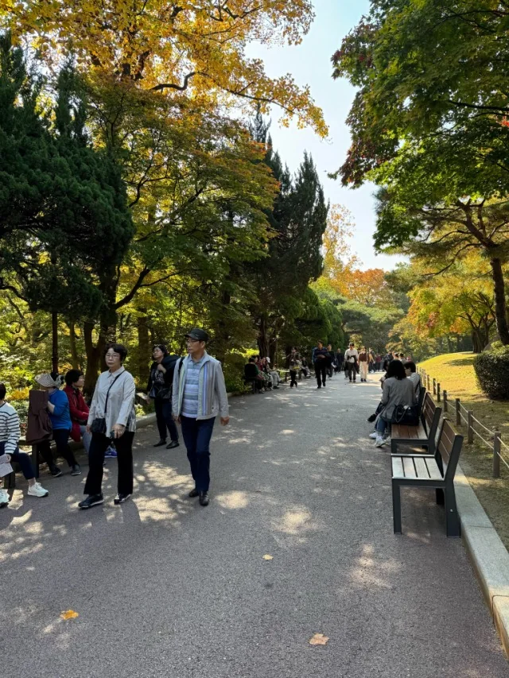
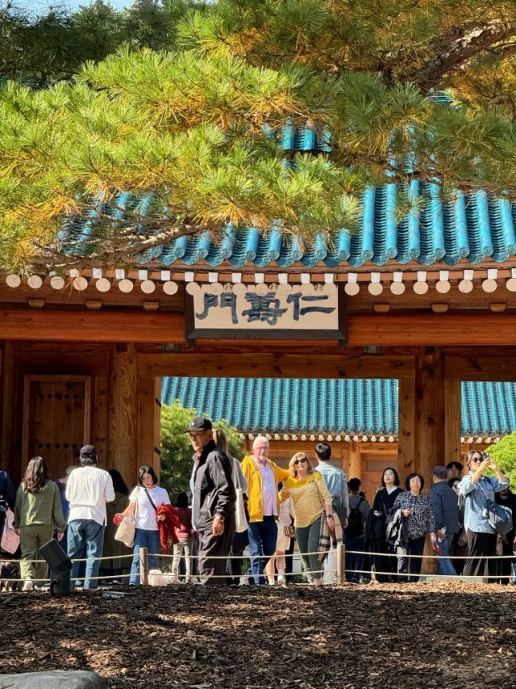
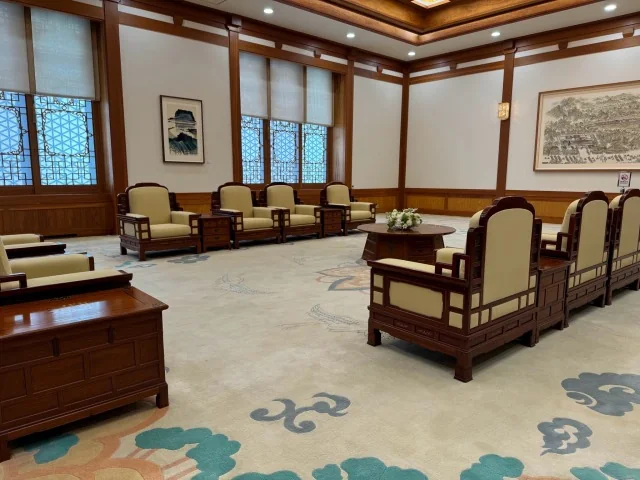
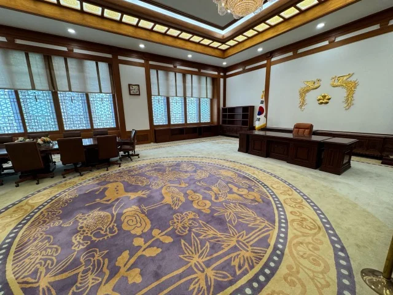
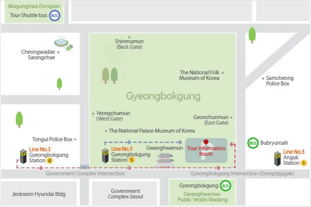

青瓦台 청와대 Cheongwadae, Seoul.


2026/10/24 更新
青瓦台園區自 2025/08/01 起停止開放參觀，總統 2025/12/29 起已回到這裡辦公。下面的參觀方式是 2016 年當時的狀況，現在已經不能照著走了。
- 園區內：目前沒有導覽可預約，原本的預約網站也已停用。據報導，青瓦台方面打算在 2027 年開放部分園區，但還沒有日期。
- 七宮（Chilgung）：2026/02/01 起改為預約制。
- 青瓦台路沿線：花園步道在 2026 年 5 月完成，可以沿路走一段。
- 出發前請到 Visit Seoul 確認最新公告。


2022/05/10 到 2025/07/31：開放期
這段期間園區對民眾免費開放，本館內部（總統辦公室、接見室等）可以入內，官邸也在參觀路線上。跟 2016 年只能預約導覽、不能進建築內部相比，差很多。
- 一般民眾：線上預約參觀日前 4 週內的場次，一筆預約最多 6 人。2022/06/12 起改為先到先得，每日名額也增加了。
- 外國遊客：不一定要預約，可帶護照到正門或春秋館（춘추관）的服務處現場申請，每日限額 2,000 人，額滿為止。我拿的是中華民國護照，當天沒有預約，現場跟著大家走，就進到青瓦台內部了。
- 開放時間 09:00 到 18:00，週二休館。



2016 年當時的參觀須知（已過時）
Place of Meeting Tour participants are asked to bring a passport and to arrive at the meeting place for Cheong Wa Dae tours located in the parking lot on the east side of Gyeongbok Palace 30 minutes prior to the time reserved.

Please arrive at the Cheong Wa Dae Tour Information Booth, located in the East Gate Parking Lot of Gyeongbokgung Palace, at least 30 minutes before the start of the tour. After the tour guide checks IDs, your group will board the shuttle and proceed to Cheong Wa Dae. Please bring your passport with you for the ID check. Upon arrival, there will be a brief security check followed by a short introductory video. The actual tour will begin shortly after and cover areas such as Nokjiwon Garden, the old building grounds, the Main Building and Yeongbin-gwan (the State Guest House). The entire tour will take approximately 60 minutes.
@halafish 張貼的相片，於 2016 年 4 月 11 日 10:28 PM PDT 張貼
::http://itigre.com::